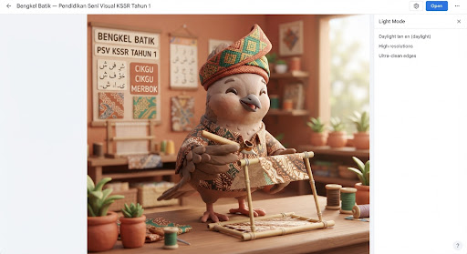
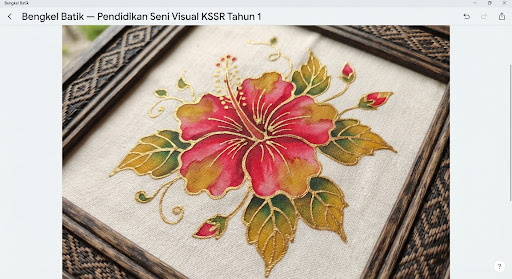
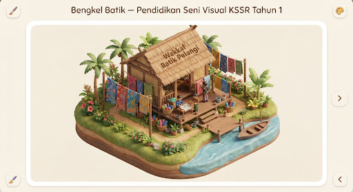

palette
palette
KSSR PSV TAHUN 1
hotel_class
3 / 6 Karya Seni Cilik
Bengkel Batik Ajaib 🌺
Karya 3 drp 6: Corak Garisan Ceria & Canting Bunga Raya Tradisional
brush Kemajuan Bengkel Seni
50% Selesai

draw
Cikgu Merbok Seni 🕊️
“Wah, cantiknya sapuan lilin Wira Adam! Mari pilih warna harmoni merah bunga raya dan kuning diraja untuk hidupkan corak batik kain pasang Kampung Wira!”
🖌️ CABARAN 2 DRP 3
•
Santai & Kreatif
Pilih Warna Harmoni Kelopak Bunga Raya
Padankan warna asas dan sekunder untuk mencantikkan kain batik wira!
auto_fix
Alat Aktif: Canting Lilin & Berus Sabut
water_drop Sapuan Basah

Kelopak 1 Terpilih
Formula Seni:
Merah Asas
+
Kuning Diraja
=
Jingga Harmoni 🧡
lightbulb
Petua Seni KSSR: Warna merah melambangkan keberanian dan tenaga wira, manakala kuning emas menceriakan suasana kampung!
explore
Tahun 1 SK
Peta Modul Seni Visual
check_circle
Unit 1: Garisan Lurus & Zig-zag
Selesai • 3 Bintang ⭐⭐⭐
check_circle
Unit 2: Bentuk Geometri & Rupa Flora
Selesai • 3 Bintang ⭐⭐⭐
brush
Unit 3: Canting Corak Batik
Sedang Berkarya • Cabaran 2/3
lock
Unit 4: Anyaman Kelarai Mengkuang
Terkunci • Lengkapkan Unit 3
lock
Unit 5: Catan Alam & Kolaj Kertas
Terkunci
lock
Unit 6: Pasu Ukiran & Gong Emas
Pameran Warisan Akhir
holiday_village PROJEK KAMPUNG WIRA
Ganjaran Karya 3

Galeri Kraf & Wakaf Batik Pelangi
Membina gerai galeri tenunan dan ampaian batik sutera di pinggir sungai Kampung Wira.
star
+50 Bintang
format_paint
+150 Pewarna Asli